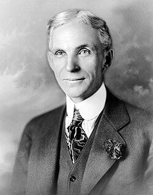

Karl Benz

1885-ben megépítette kétütemű gázmotorját, 1886-ban pedig bemutatta
már egy lóerős, négyütemű motorral hajtott, háromkerekű járművét. Sok
gépjárművel kapcsolatos szabadalmat jegyzett és tökéletesítette a
villanygyújtást is.
Henry Ford

Termékeny feltalálónak számított, nevéhez 161 amerikai szabadalom
fűződik. A Ford Company tulajdonosaként a világ leggazdagabb és leghíresebb
emberei között volt. A nevéhez fűződő fordizmus nemcsak az autógyártást, de
az Egyesült Államok közlekedését és iparát is forradalmasította.